| 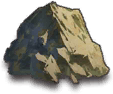源岩鉱 | 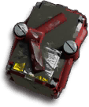破損装置 | エステル原料 | 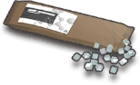ブドウ糖 | 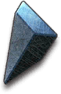異鉄の欠片 |
| 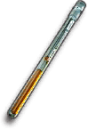アケトン試剤 |
| 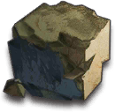初級源岩 | 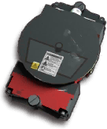初級装置 | 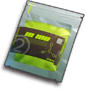初級エステル | 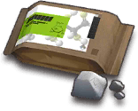初級糖源 | 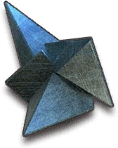初級異鉄 |
| 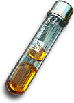初級アケトン |
| 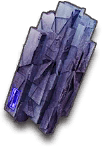マンガン | 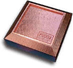砥石 | 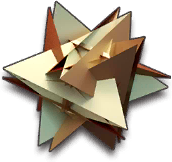RMA70-12 | 合成コール | 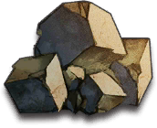中級源岩 |
| 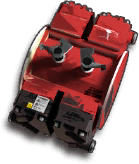中級装置 | 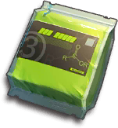中級エステル | 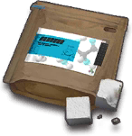中級糖源 | 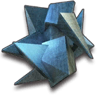中級異鉄 | 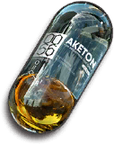中級アケトン |
| 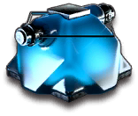人工ゲル | 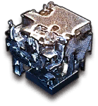熾合金 |
| 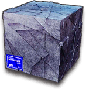上級マンガン | 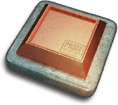上級砥石 | 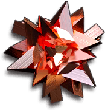RMA70-24 | 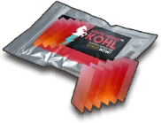上級合成コール | 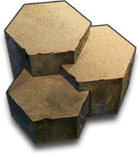上級源岩 |
| 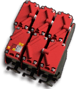上級装置 | 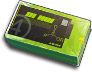上級エステル | 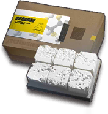上級糖源 | 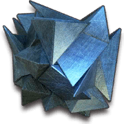上級異鉄 | 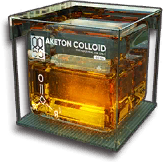上級アケトン |
| 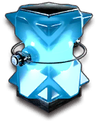融合ゲル | 合成熾合金 |
| 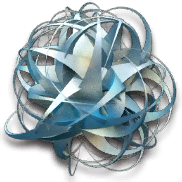D32鋼 | 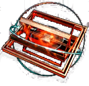ナノフレーク | 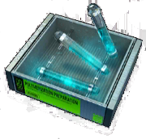融合材 |